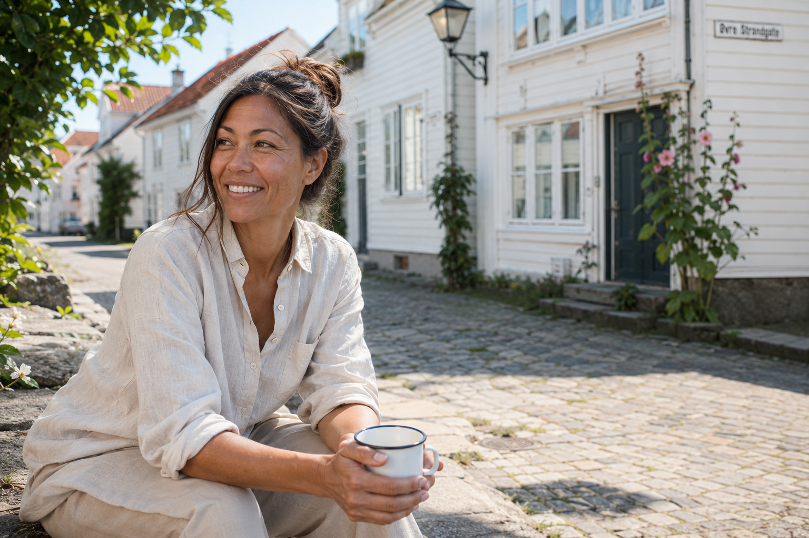
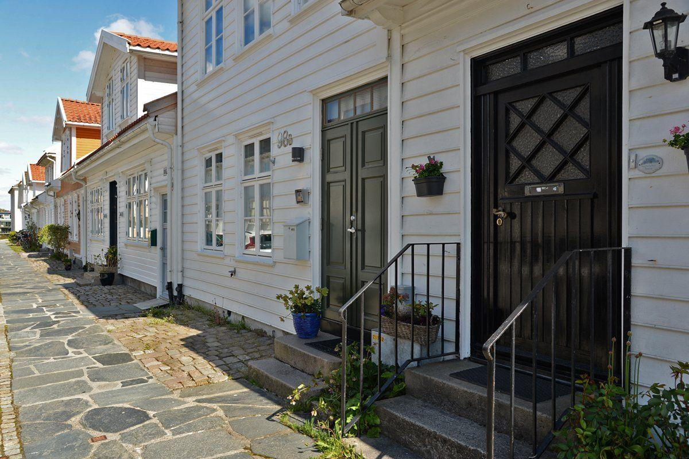
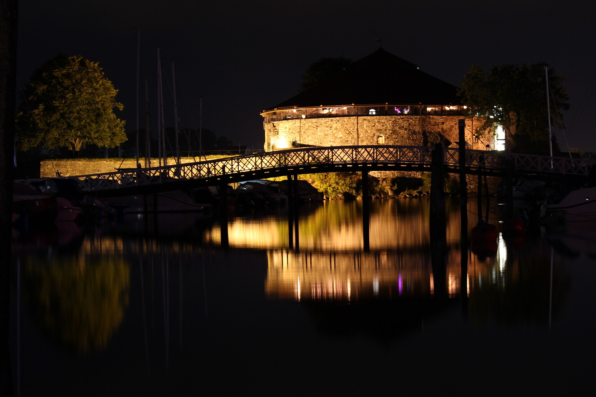
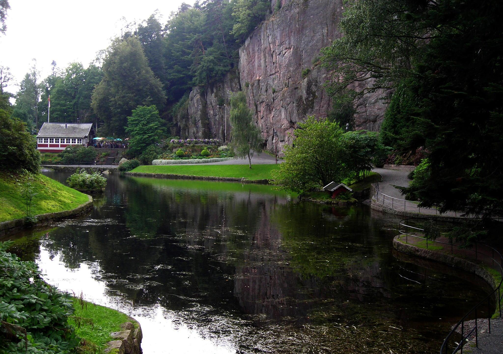
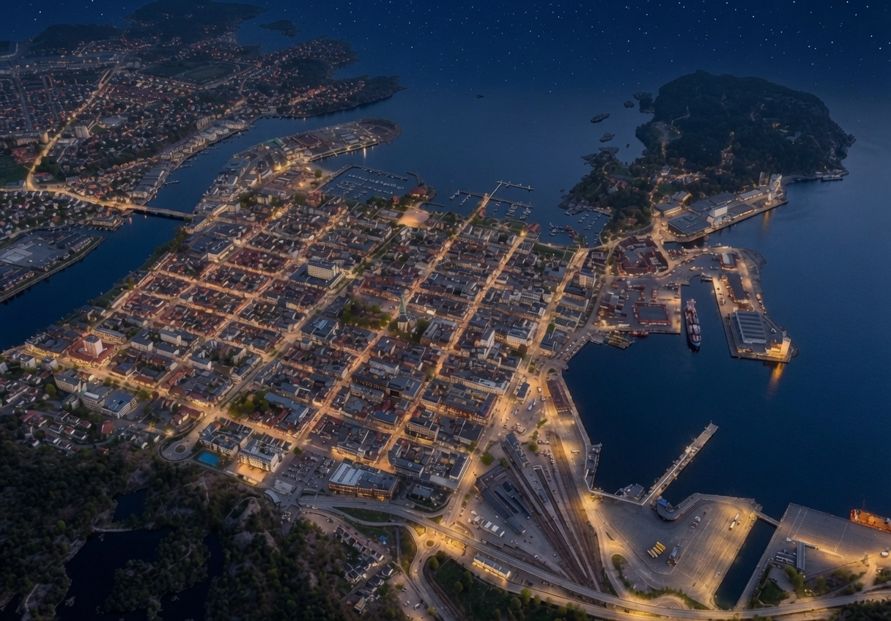

Hilde
AGDER · NORGE
Kristiansand
KRISTIANSAND · HISTORIE
—
KRISTIANSAND
Hilde
«Byen de fleste går rett gjennom»
FORESLÅTTE TEMAER
GUIDEHilde
💬 Klikk et tema for å utforske — eller spør Hilde direkte